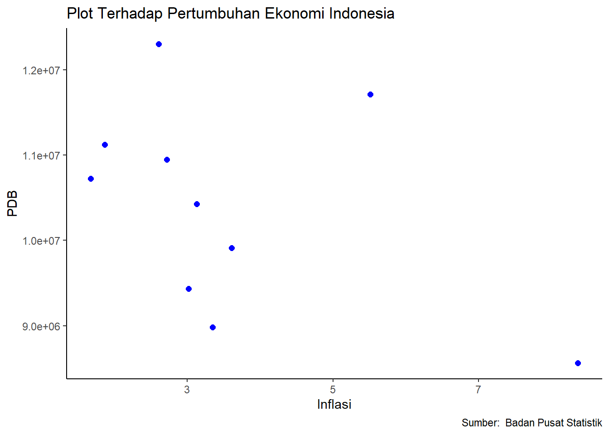

Pengaruh Inflasi Terhadap Perekonomi Indonesia dalam Kurun Waktu 10 Tahun (2014-2023)
Metode Penelitian Politeknik APP Jakarta
Author
Nama : Mohamad zaki zam zami - NIM : 230204679
Published
January 1, 2025
Logo Politeknik APP Jakarta
1 PENDAHULUAN
1.1 Latar Belakang
Negara-negara berkembang umumnya menghadapi tantangan ekonomi seperti tingkat inflasi yang tinggi dan pertumbuhan ekonomi yang lambat. Inflasi, sebagai salah satu indikator ekonomi yang penting, selalu diupayakan agar tetap rendah dan stabil untuk mencegah dampak negatif terhadap perekonomian, seperti ketidakstabilan makroekonomi. Inflasi dapat memberikan efek positif maupun negatif bagi perekonomian. Ketika perekonomian suatu negara mengalami perlambatan, Bank Indonesia dapat menerapkan kebijakan moneter ekspansif dengan menurunkan tingkat suku bunga untuk mendorong pertumbuhan ekonomi.
Menurut Badan Pusat Statistik (BPS) menetapkan dua jenis garis kemiskinan, yaitu Garis Kemiskinan Makanan (GKM) dan Garis Kemiskinan Non Makanan (GKNM), yang mencakup kebutuhan dasar seperti perumahan, pakaian, pendidikan, dan kesehatan. Konsep ini mendefinisikan kemiskinan sebagai keadaan ekonomi yang tidak mencukupi. Menurut Jhingan, fenomena lingkaran setan kemiskinan menggambarkan situasi di mana produktivitas yang rendah disebabkan oleh kurangnya modal dan keterbelakangan ekonomi. Kondisi ini mengakibatkan pendapatan yang rendah, lemahnya permintaan, minimnya investasi, kurangnya modal, dan pada akhirnya, produktivitas yang tetap rendah. Selain inflasi, berbagai faktor lain juga berkontribusi terhadap kemiskinan, seperti pertumbuhan jumlah penduduk, tingkat pengangguran, pertumbuhan ekonomi, dan aspek budaya. Dalam penelitian ini, perhatian utama difokuskan pada tingkat inflasi, dengan keyakinan bahwa inflasi memiliki dampak signifikan terhadap peningkatan angka kemiskinan.
Inflasi yang tinggi dan tidak stabil mencerminkan ketidakstabilan ekonomi yang ditandai oleh kenaikan harga barang dan jasa secara umum dan terus-menerus. Kondisi ini dapat memperburuk tingkat kemiskinan di Indonesia. Semakin tinggi inflasi, masyarakat yang sebelumnya yang mampu memenuhi kebutuhan sehari-hari menjadi tidak mampu karena lonjakan harga barang dan jasa. Akibatnya, kemiskinan meningkat, sementara tingkat inflasi di Indonesia terus mengalami fluktuasi dari tahun ke tahun.
1.2 Ruang Lingkup
Data inflasi dan tingkat kemiskinan di Indonesia pada periode 2014 hingga 2023 digunakan sebagai dasar analisis dalam penelitian ini. Sumber data diperoleh dari Badan Pusat Statistik (BPS) atau lembaga terpercaya lainnya. Penelitian ini menggunakan analisis regresi linier untuk mengevaluasi secara mendalam pengaruh inflasi terhadap tingkat kemiskinan.
1.3 Rumusan Masalah
Berdasarkan uraian latar belakang masalah diatas, maka terdapat beberapa indikator yang menjadi rumusan masalah dalam penelitian ini. Adapun rumusan masalah tersebut adalah 1. Apakah inflasi berpengaruh terhadap kemiskinan di Indonesia selama 10 tahun terakhir ?
1.4 Tujuan Penelitian
Penelitian ini bertujuan untuk memberikan penjelasan yang rinci dan mendalam mengenai hubungan antara tingkat inflasi dan tingkat kemiskinan di Indonesia selama sepuluh tahun terakhir. Tujuan utamanya adalah untuk memahami sejauh mana inflasi memengaruhi tingkat kemiskinan.
1.5 Manfaat Penelitian
Penelitian ini diharapkan menjadi sumber informasi yang relevan dan bermanfaat bagi pembuat kebijakan, baik di tingkat pemerintah maupun organisasi non-pemerintah. Dengan memahami hubungan antara inflasi dan kemiskinan secara lebih baik, pembuat kebijakan dapat merumuskan strategi yang lebih efektif untuk mengatasi permasalahan tersebut.
── Attaching core tidyverse packages ──────────────────────── tidyverse 2.0.0 ──
✔ dplyr 1.1.4 ✔ readr 2.1.4
✔ forcats 1.0.0 ✔ stringr 1.5.1
✔ ggplot2 3.4.4 ✔ tibble 3.2.1
✔ lubridate 1.9.3 ✔ tidyr 1.3.0
✔ purrr 1.0.2
── Conflicts ────────────────────────────────────────── tidyverse_conflicts() ──
✖ dplyr::filter() masks stats::filter()
✖ dplyr::lag() masks stats::lag()
ℹ Use the conflicted package (<http://conflicted.r-lib.org/>) to force all conflicts to become errors
library(readxl)library(WDI)
2 STUDI PUSTAKA
2.1 Inflasi
Inflasi adalah fenomena di mana tingkat harga umum mengalami kenaikan secara berkelanjutan. Kenaikan harga satu atau dua jenis barang saja tidak dapat disebut sebagai inflasi, kecuali jika kenaikan tersebut meluas atau menyebabkan kenaikan harga sebagian besar barang lainnya (Boediono, 2014:161).
2.2 Produk Domestik Bruto (PDB)
Bagi sebuah negara, pertumbuhan ekonomi merupakan salah satu target utama yang perlu dicapai setiap tahun. Tingkat pertumbuhan ekonomi menjadi salah satu indikator keberhasilan negara tersebut, termasuk Indonesia yang juga menjadikannya sebagai prioritas utama. Menurut M. Suparko dan Maria R. Suparko, ada beberapa alat yang dapat digunakan untuk mengukur pertumbuhan ekonomi: a. Produk Domestik Bruto (PDB) PDB merupakan total nilai barang dan jasa akhir yang dihasilkan dalam harga pasar. Namun, kelemahan PDB sebagai ukuran pertumbuhan ekonomi adalah sifatnya yang bersifat umum dan tidak secara langsung mencerminkan kesejahteraan masyarakat. b. PDB per Kapita atau Pendapatan Per Kapita PDB per kapita merupakan ukuran yang lebih akurat karena mempertimbangkan jumlah penduduk. Pendapatan per kapita dihitung dengan membagi PDB dengan total jumlah penduduk.
3 METODE PENELITIAN
3.1 Data
Tahun
Inflasi
PDB (Miliar Rupiah)
2014
8.36
8.564.866,6
2015
3.35
8.982.517,1
2016
3.02
9.434.613,4
2017
3.61
9.912.928,1
2018
3.13
10.425.851,9
2019
2.72
10.949.155,4
2020
1.68
10.722.999,3
2021
1.87
11.120.077,9
2022
5.51
11.710.397,8
2023
2.61
12.301.393,6
dat<-read_excel('latihan1.xlsx')library(ggplot2)ggplot(data=dat, aes(x=X, y=Y))+geom_point(color='blue', size=2)+labs(title="Plot Terhadap Pertumbuhan Ekonomi Indonesia",x="Inflasi",y="PDB",caption ="Sumber: Badan Pusat Statistik") +theme_classic()

3.2 Metode analisis
Penelitian ini menerapkan metode analisis regresi linier berganda (multiple regression analysis) dengan pendekatan kuantitatif dan deskriptif. Pendekatan kuantitatif dilakukan melalui analisis berbasis angka untuk mengkaji faktor-faktor yang memengaruhi inflasi serta dampaknya terhadap perekonomian di Indonesia. Sementara itu, metode deskriptif digunakan untuk memberikan gambaran yang sistematis dan faktual mengenai perkembangan setiap variabel serta kondisi ekonomi secara umum. Dalam analisis kuantitatif, penelitian ini melibatkan proses penghitungan dan pengukuran berbagai faktor yang memengaruhi inflasi dan perekonomian. Metode regresi linier berganda digunakan untuk menganalisis hubungan antara variabel independen (faktor-faktor yang memengaruhi) dan variabel dependen (perekonomian), serta mengukur sejauh mana masing-masing faktor berkontribusi terhadap variasi dalam tingkat perekonomian.
4 PEMBAHASAN
4.1 Pembahasan masalah
Berdasarkan informasi dalam tabel, pertumbuhan Produk Domestik Bruto (PDB) Indonesia dari tahun 2013 hingga 2022 menunjukkan fluktuasi. Pada periode 2010-2011, PDB Indonesia mengalami pertumbuhan sebesar 18,26%, mencerminkan perkembangan ekonomi yang baik dengan pendapatan masyarakat yang dapat menopang konsumsi dan pertumbuhan yang stabil. Namun, dalam tahun-tahun berikutnya hingga 2015, PDB Indonesia mengalami penurunan yang berlanjut hingga mencapai titik terendah pada tahun 2015, yakni -3,36% atau sejumlah USD 860.854.235.065. Penurunan ini diatribusikan pada kebijakan pemerintah.Pada periode tahun 2016-2017, PDB Indonesia mengalami pertumbuhan sebesar 8,99%, yang dipicu oleh struktur ekonomi Indonesia yang mengalami perubahan spasial pada tahun 2017. Namun, di tahun 2020, PDB Indonesia kembali mengalami penurunan sebesar -5,40%, yang kemudian diikuti oleh kenaikan signifikan pada tahun berikutnya, yaitu sebesar 12,3%.
Call:
lm(formula = Y ~ X, data = dat)
Residuals:
Min 1Q Median 3Q Max
-1493806 -540379 -157538 287650 1818398
Coefficients:
Estimate Std. Error t value Pr(>|t|)
(Intercept) 11382564 769457 14.793 4.29e-07 ***
X -270520 190032 -1.424 0.192
---
Signif. codes: 0 '***' 0.001 '**' 0.01 '*' 0.05 '.' 0.1 ' ' 1
Residual standard error: 1130000 on 8 degrees of freedom
Multiple R-squared: 0.2021, Adjusted R-squared: 0.1024
F-statistic: 2.026 on 1 and 8 DF, p-value: 0.1924
HHasil estimasi menggunakan metode Ordinary Least Squares (OLS) pada model regresi multivariat mengungkap hubungan antara variabel dependen, yaitu pertumbuhan ekonomi, dengan variabel independen, yaitu inflasi. Secara lebih rinci, hasil analisis menunjukkan bahwa setiap kenaikan sebesar 1 persen pada tingkat inflasi akan mengurangi pertumbuhan ekonomi sebesar -270520. Sebaliknya, penurunan tingkat inflasi akan meningkatkan pertumbuhan ekonomi sebesar 4,29e-07. Temuan ini mengindikasikan bahwa inflasi memiliki dampak signifikan terhadap pertumbuhan ekonomi Indonesia atau Produk Domestik Bruto (PDB). Peningkatan inflasi, yang sebagian besar dipengaruhi oleh dampak pandemi Covid-19 di Indonesia, ditandai oleh kenaikan harga bahan bakar minyak (BBM) dan sembako, penurunan daya beli masyarakat, serta lonjakan tingkat pengangguran. Faktor-faktor tersebut secara bersama-sama memengaruhi hubungan antara inflasi dan pertumbuhan ekonomi nasional.
5 Kesimpulan
Dapat disimpulkan bahwa terdapat korelasi antara dampak inflasi terhadap pertumbuhan ekonomi Indonesia selama periode 2014-2023. Hubungan antara pertumbuhan ekonomi Indonesia dan inflasi tergolong lemah. Inflasi menunjukkan korelasi negatif yang signifikan terhadap pertumbuhan ekonomi, mengindikasikan bahwa peningkatan tingkat inflasi memiliki dampak yang cukup besar dalam menurunkan pertumbuhan ekonomi Indonesia. Dengan kata lain, naiknya tingkat inflasi dihubungkan dengan penurunan signifikan dalam pertumbuhan ekonomi Indonesia.
6 Referensi
Dwi, Y., & Pasaribu, J. P. K. (2023). Pengaruh inflasi terhadap pertumbuhan ekonomi di Indonesia Periode 2013-2021. Jurnal Ilmiah Manajemen Dan Kewirausahaan (JUMANAGE), 2(1), 131-137.
Inflasi Menurut Kelompok Pengeluaran, 2014-2023 | Satu Data Perdagangan. (2023). Retrieved 01 January 2025, from https://satudata.kemendag.go.id/data-informasi/perdagangan-dalam-negeri/inflasi-2020
Produk Domestik Bruto (PDB) | Satu Data Perdagangan. (2023). Retrieved 01 January 2025, from https://satudata.kemendag.go.id/data-informasi/perdagangan-dalam-negeri/produk-domestik-bruto
Salim, A., Fadilla, F., & Purnamasari, A. (2021). Pengaruh inflasi terhadap pertumbuhan ekonomi indonesia. Ekonomica Sharia: Jurnal Pemikiran dan Pengembangan Ekonomi Syariah, 7(1), 17-28.
Sandi, F., Halim, A., & Furqan, F. (2023). Pengaruh inflasi terhadap tingkat kemiskinan. In FORUM EKONOMI: Jurnal Ekonomi, Manajemen dan Akuntansi (Vol. 25, No. 4, pp. 659-666).
Satria, D. (2012). Analisis Dampak Inflasi Terhadap Pertumbuhan Ekonomi Indonesia. Ecosains Jurnal Ilmiah Ekonomi dan Pembangunan, 1(2), 123-141.